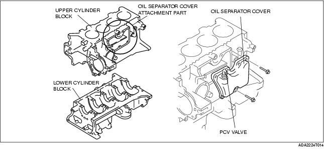

Cylinder block construction [ZY]
• The cylinder block is made of aluminum alloy cast with an iron liner, improving heat radiation and decreasing weight.
• The cylinder block is composed of an upper cylinder block and a lower cylinder block integrated with the main bearing cap.
• To improve blow-by gas ventilation efficiency, the upper cylinder block has an oil separator function with an oil separator cover, PCV (positive crankcase ventilation) valve and a PCV valve installation area.
• With the adoption of the lower cylinder block, engine vibration has been reduced by improvement in joint rigidity of the transaxle and supporting rigidity of the crankshaft.
